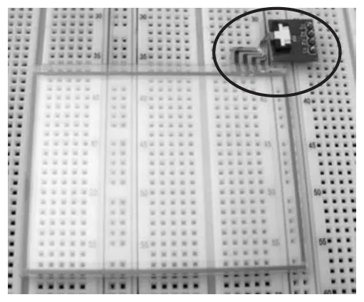
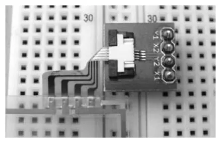

Touchscreens can be quite expensive, but we’ll use an inexpensive model available from SparkFun (part numbers LCD-08977 and BOB-09170), originally designed for the Nintendo DS game console.
This touchscreen, which measures about 2 by 2 3/4 inches, is shown mounted on a breadboard in Figure 10-1.

Notice the horizontal ribbon cable connected into the small circuit board at the upper-right corner (it’s circled in the figure). This breakout board is used to attach the Arduino and the breadboard to the touchscreen; Figure 10-2 shows a close-up of the board.

Connecting the Touchscreen
Connect the touchscreen breakout board to an Arduino as shown in Table 10-1.
| Breakout Board Pin | Arduino Pin |
|---|---|
| Y1 | A0 |
| X2 | A1 |
| Y2 | A2 |
| X2 | A3 |